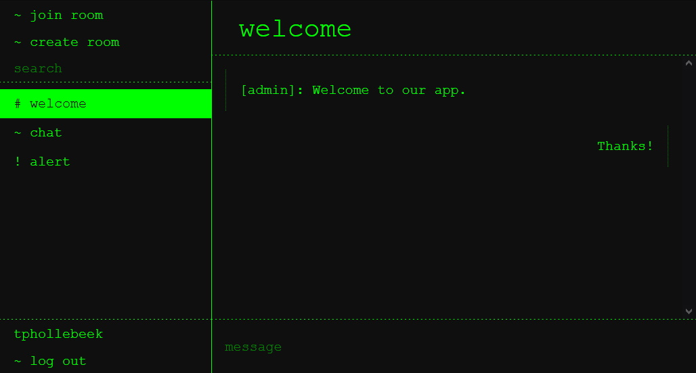
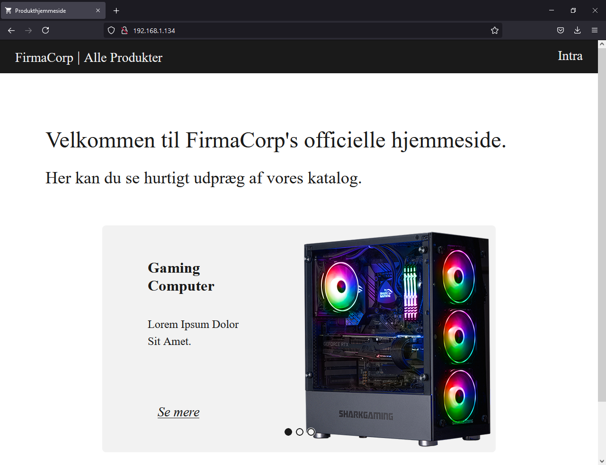
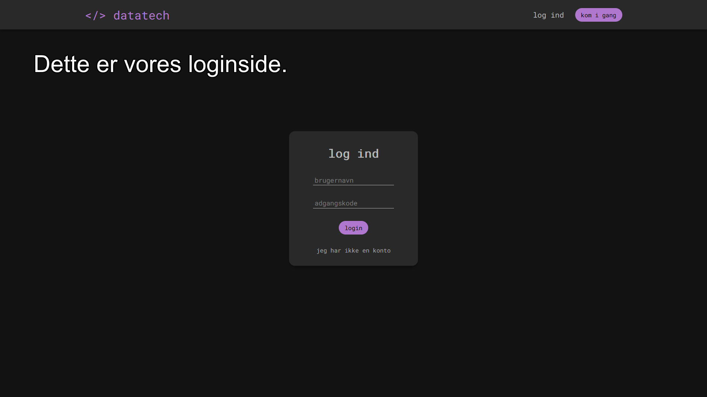

Projekter
Min hjemmeside
Denne hjemmeside er noget, jeg selv 100% har designet og lavet, bortset fra de små ikoner.
I fremtiden planlægger jeg at erstatte ikonerne med noget, der er 100% mine egne.
0s and 1s
Da jeg første gang startede ud med Node og webservere, lavede jeg en simpel multiplayer Kryds & Bolle, som jeg kaldte for 0s And 1s, ud fra at kryds var et 1 og at bolle var et 0.
Desuden var baggrunden også lavet af tekst for at undgå at skulle importere billeder til spillet.
┌───┬───┬───┐ │ 0 │ 1 │ # │ ├───┼───┼───┤ │ 0 │ # │ 1 │ ├───┼───┼───┤ │ 0 │ # │ # │ └───┴───┴───┘ PLAYER 0 WON! - GAME OVER -
MessAnger
Som et skoleprojekt lavede jeg sammen med min klassekammerat Simon From Jakobsen en webapp, hvor man kunne skabe flere diskussionsrum og sende beskeder til hinanden, som har et registerings- og loginssystem.
Alt frontend er skabt af mig inkl. programmering i HTML, CSS og TypeScript, og alt backendarbejdet er lavet af Simon.
Du kan finde github siden for det projekt her.
Ligesom denne side, er webappen også bygget til mobiler, dog skal man gå ind på /mobile for at få adgang til den, hvilket man ikke behøver på denne side.
demobillede af vores webapp.
FirmaCorp Site
Til vores GF2 afsluttende eud-eksamen blev vi bedt om (blandt andet) at lave en hjemmeside til et fiktivt firma.
Sammen med min klassekammerat Simon lavede vi en hjemmeside med en startside med karrusel af forskellige produkter, produktliste og produktside, samt et Intra for at skabe og slette nye produkter og opdatere karrusellen.
Ligesom ved MessAnger lavede jeg frontend, mens Simon lavede backend, og vi hjalp hinanden, hvor det var muligt.
Det endte med at se ret godt ud, dog meget grundlæggende i design pga. tidsmæssige begrænsninger.
Du kan se github siden for projektet her.
DataTech Projekt
Fordi vi kedede os, valgte Simon og jeg at lave en side vi forklarede som "en social media platform til projekter, fx praktikplads søgende datateknikere".
For at prøve noget anderledes end hvad vi normalt gjorde, ville jeg arbejde på backend mens Simon arbejdede på frontend.
Vi arbejdede på det, men evt. fik jeg pludselig en god idé til vores frontend design og lavede adskillige drafts derudaf, som er de designs der kan ses nedenunder.
Selv om "jeg" har lavet designet, kommer meget af layout og farvevalg fra Simon.
Nuværende arbejder vi på at implementere blog editoren.
Jeg har også lavet mange projekter i Lua, som et dialogsystem, samt mange UI projekter, og andre ting der ikke er færdige endnu.